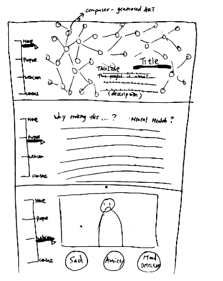
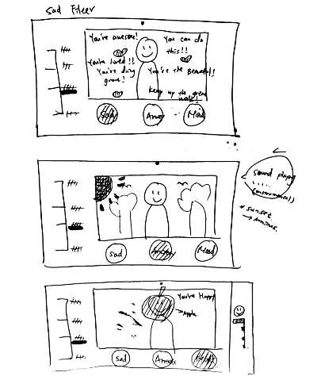
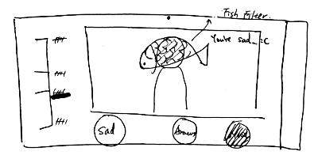

I'm building a one-page scrolling website that provides an interactive experience between users and the computer camera. I will use the library of facial recognition or so called computer vision to detect user's mood based on their current facial expressions. The very top section of my paper prototype (the section with a word "title" on) is the font page of my website. My goal for my front page is to create a computer-generated art that can interact with the mouse movement. I will also include a navigation bar on the side for users to jump into different sections of the web page. The following section of the web page demonstrate the purpose of this project. I will add a short description and a brief description in this section explainning why I want to make this website and my target topic which is mental health. The next section is the Webcam and filters section (the main section).
If I click the sad filter button (shows in the next section), user will see himself/herself in the camera filter that has a lot of encouragement text messages and red hearts on the webpage. If the user clicks on the anxiety filter, the calming background or scene will be generated on the webcam and a calming sound effects will be played for users to de-stress. If you click on the mood detection filter, the filter will be generated based on the user's current mood and there will be a mood detection graphic bar on the right side of the webpage to indicate the percentages of your current happiness or sadness.
 What I learned through the process of paper prototyping and interview is the importance of clear explanation about the project. One of my interviewee told me that at the beginning she didn't know what the purpose of using these filters is. I feel I need to have a explain well enough in the purpose section in order to let my user have a better understanding of how the each filter works and how each of them can benefit them (the user). Some people suggested me to focus on the graphic design of the filter in order to create fun experience for users using the filters. Also, a lot of people told me that they believe it's a cool idea to use mood detection library.